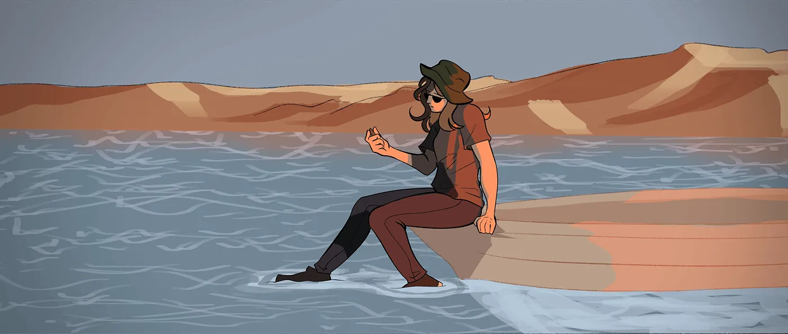

Çizgi film ve animasyon öğrencisi
Ben Elif Ecem Gelir. Bahçeşehir Üniversitesi'nde Çizgi Film ve Animasyon okuyorum; karakter tasarımı, konsept sanat ve renklendirme üzerine çalışıyorum. Bu dönem GEP1316 dersinde web sitesi yazmayı öğrendim.
Eğitim
- Lisans
- Bahçeşehir Üniversitesi, Çizgi Film ve Animasyon, İstanbul (devam ediyor)
- Ders
- GEP1316 Kodlama Okuryazarlığı, 2026-2027 Güz: HTML, CSS, JavaScript ve GitHub Pages
İlgi alanları ve araçlar
- Çizim
- Clip Studio Paint EX
- Web
- HTML, CSS, JavaScript, Git ve GitHub Pages
Kodlama ve yapay zekânın mesleğimdeki yeri
Animasyon yalnızca çizimden oluşmuyor. Bir sahnede yüzlerce kare var ve bu kareleri düzenleyen programların çoğu kodla genişletilebiliyor: After Effects'te ifadeler, Blender'da Python betikleri, oyun motorlarında karakteri hareket ettiren komutlar. Kod okuyabilen bir animatör tekrar eden işi bir betiğe bırakıp zamanını çizime ayırabiliyor.
Bu siteyi yazarken yapay zekâdan kod önerisi aldım; her öneriyi okudum, tarayıcıda denedim ve eksiklerini düzelttim. Çizimlerimi ise Clip Studio Paint EX'te kendim çiziyorum. Görsel üreten modellere karşı daha temkinliyim, çünkü hangi sanatçıların işleriyle eğitildikleri hâlâ tartışılıyor.
Bence bir animatör için kodlama okuryazarlığı, ekipteki teknik arkadaşlarla aynı dili konuşabilmek demek. Bir sahnenin neden yavaş açıldığını ya da bir efektin neden bozulduğunu anlayabilmek, çizimi korumanın da bir yolu.
Ekip içinde çalışma
Animasyon öğrencisi olmak ekip oyuncusu olmak demek. Bir sanatçı ekibini yönetebileceğime de başkasının yönlendirmesiyle çalışabileceğime de inanıyorum.
